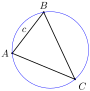
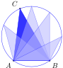
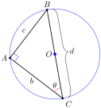
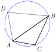

Section 3.5 Chapter 3 Activity
Activity 3.5. Understanding the Law of Sines.
Materials: You will need paper and pencil, a ruler, compass, and protractor, or a dynamic geometry program such as Geogebra.
-
The vertices of a triangle determine a unique circumscribing circle.
Draw a large acute triangle and label the vertices \(A\) , \(B\text{,}\) and \(C\text{.}\)
-
Draw the perpendicular bisector of side \(\overline{AC}\text{.}\) You can use a compass, or use your ruler and protractor as follows:
Find the midpoint, \(M\text{,}\) of side \(AC\text{.}\)
Draw a line that passes through \(M\) and is perpendicular to side \(\overline{AC}\text{.}\)
Draw the perpendicular bisector of side \(\overline{BC}\) . Label the point where the two perpendicular bisectors meet with the letter \(O\text{.}\)
From geometry, we know that every point on the perpendicular bisector of a segment \(\overline{PQ}\) is equidistant between \(P\) and \(Q\text{.}\) Use this fact to explain why the point \(O\) is the same distance from each vertex of your triangle.
Using the point at \(O\) as the center, draw the circle that passes through all three vertices of your triangle. The circle is called the circumscribing circle of the triangle.

-
We can move a vertex around the circle without changing the measure of its angle.
Measure angle \(C\) in your triangle. We say that this angle subtends the arc joining \(A\) and \(B\) on the circle.
Choose any other point on the circle that is not on the arc \(\overset{\large\frown}{AB}\text{.}\) Call this point \(D\text{.}\) Draw the line segments \(\overline{AD}\) and \(\overline{BD}\) to create a second triangle. Measure the angle at \(D\text{;}\) it should be the same as the angle \(C\text{.}\)
-
In fact, all angles with vertex on the circle that subtend the same arc have the same measure. Verify this fact by creating two more angles that subtend the arc \(\overset{\large\frown}{AB}\text{.}\)

-
What is the length of the diameter of the circumscribing circle?
At this point, if your drawing is too cluttered, you may need to make a fresh copy of the circumscribing circle. On this circle draw just the side \(\overline{AB}\) from your original triangle.
Draw the diameter that passes through \(B\) (remember that \(O\) is the center of the circle), and label the other end of the diameter with the letter \(C'\text{.}\)
Draw triangle \(\Delta ABC'\text{,}\) and measure the angle at \(C'\text{.}\) It should be the same as angle \(C\) in your original triangle. (Why?) Let's call this angle \(\theta\text{.}\)
Now measure angle \(\angle BAC'\text{.}\) It should be 90 degrees, This is another fact from geometry: Any angle that intercepts the diameter of a circle is a right angle. Put a right angle symbol at angle \(\angle BAC'\text{.}\)
-
Label the length of the sides of your triangle as follows:
Side \(\overline{BC'}\) has length \(d\) (for diameter)
Side \(\overline{AC'}\) has length \(b\)
Side \(\overline{AB}\) has length \(c\)
(Notice that \(c\) is the side opposite the angle \(\theta\)). Using the letters \(d\text{,}\) \(b\text{,}\) and \(c\) as needed, finish the equation
\begin{equation*} \sin\theta =\hphantom{000000000000000} \end{equation*} Start from the last equation, and solve for \(d\) in terms of \(\sin C\) and \(c\text{.}\)
-
Equating expressions for the diameter: The Law of Sines
You have now written an expression for the diameter of the circumscribing circle in terms of angle \(C\) and its opposite side. If you start the derivation with angle \(B\) and the arc \(\overset{\large\frown}{AC}\text{,}\) you will get another expression for the diameter. Write that expression here.
Now write an expression for the diameter that results from starting with angle \(A\) and arc \(\overset{\large\frown}{BC}\text{.}\)
-
Write an equation that reflects the fact that the diameter of the circle has the same length in all three expressions.
This is the Law of Sines! All three expressions represent the diameter of the circumscribing circle, so they are equal to each other.
-
Verification for right and obtuse triangles
If ABC is not an acute triangle, then one of the angles must either be a right angle or an obtuse angle.
In a right triangle, call the right angle \(A\text{.}\) Now you are already at step (4) of part C , so the derivation continues as before.
To see the derivation for an obtuse triangle, follow the steps:
Draw a circle and a triangle with vertices \(A\text{,}\) \(B\text{,}\) and \(C\) on the circle so that there is an obtuse angle at point \(C\text{.}\)
Measure the angle at \(C\text{.}\) and note that the larger arc \(\overset{\large\frown}{AB}\) subtended by \(\theta\) is more than half of the circle.
Choose a point \(D\) on the larger arc \(\overset{\large\frown}{AB}\text{.}\) In triangle \(\Delta ABD\text{,}\) the angle at \(D\) subtends the shorter arc connecting \(A\) and \(B\text{.}\) Measure the angle at \(D\text{.}\) You should find that the angles at \(C\) and \(D\) are supplementary.
Here is another fact from geometry: The measure of an inscribed angle in a circle is half the measure of the arc it subtends. Use this fact to explain why the angles at \(C\) and \(D\) are supplementary.
-
What can you say about the sines of angles \(C\) and \(D\text{?}\) Because it is an acute triangle, we can use our original derivation on \(\Delta ABD\text{,}\) and substitute \(C\) for \(D\) in the result.
